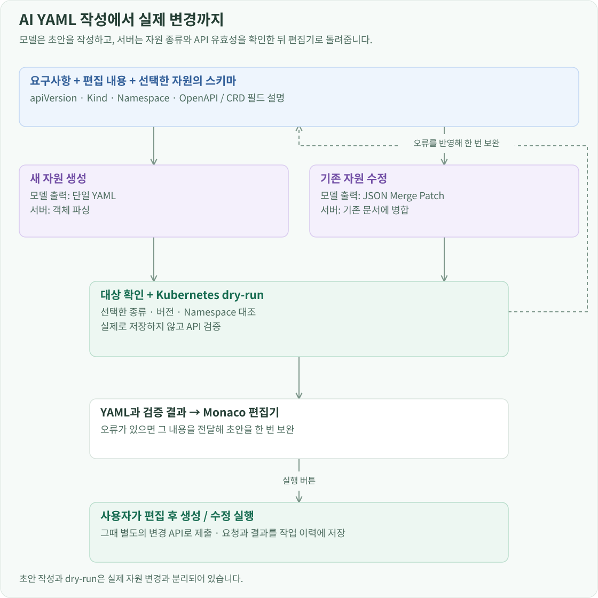
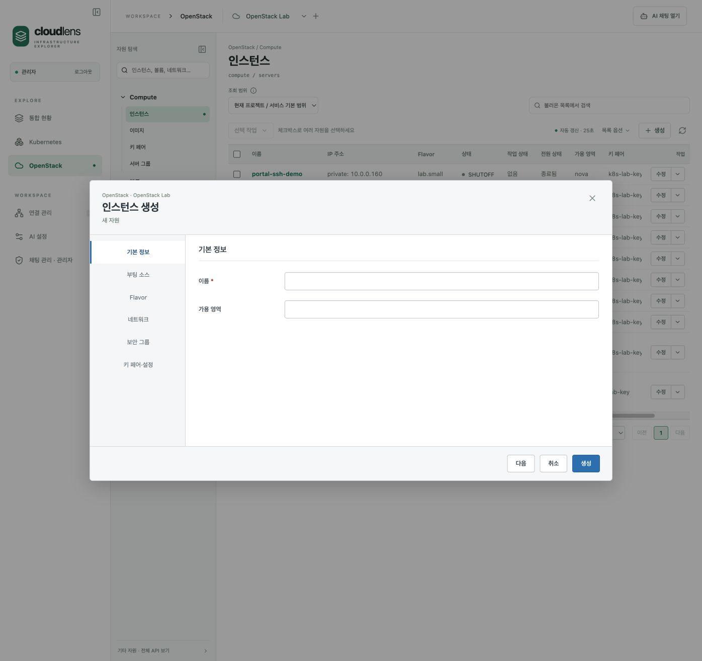
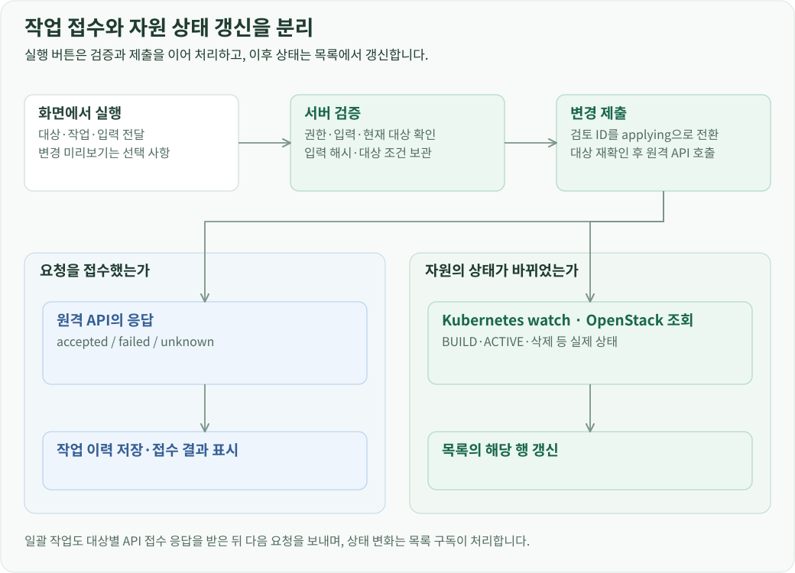
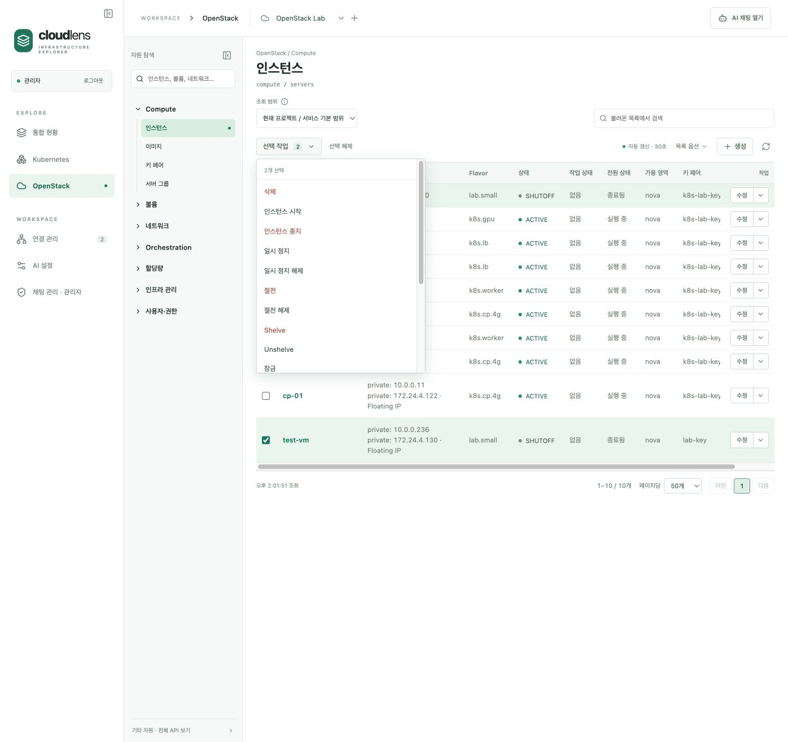
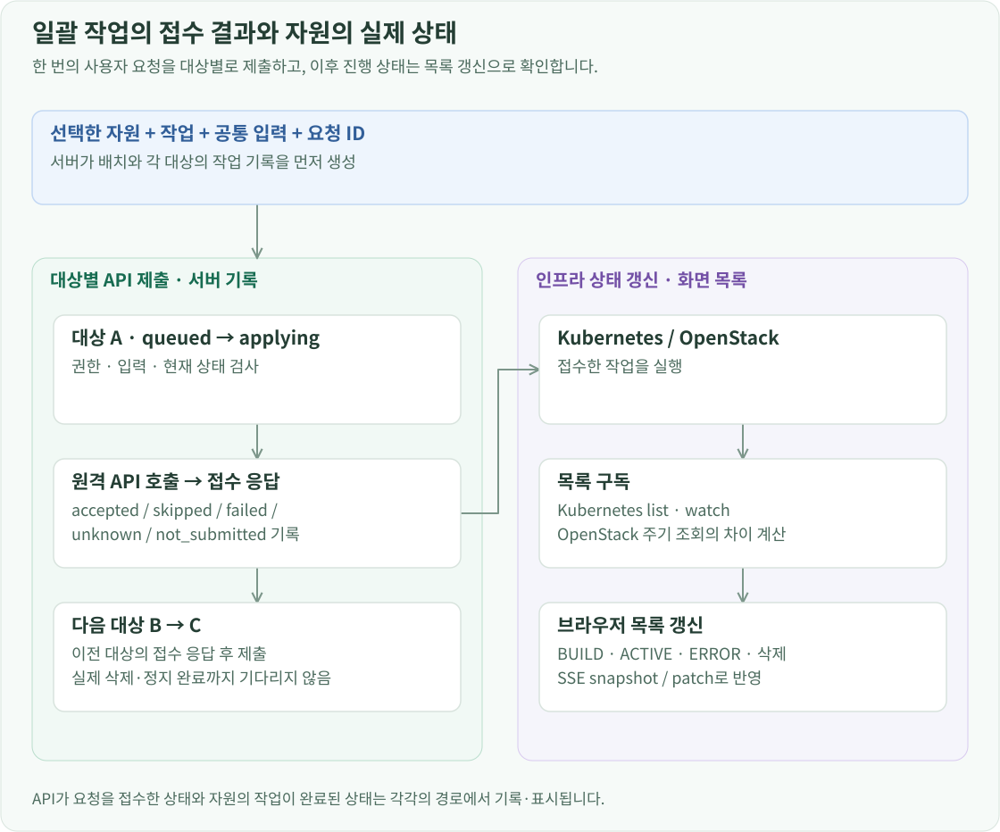

개요
변경 기능은 입력 작성, 서버 검증, 원격 API 제출, 상태 갱신으로 나눴습니다. 요청과 접수 결과는 작업 이력에 저장하고, 생성·삭제·전원 변경 후의 자원 상태는 목록 구독으로 갱신합니다.
Kubernetes YAML 작성
생성 화면은 선택한 API 버전과 Kind에 맞는 기본 YAML을 Monaco 편집기에 넣습니다. 사용자는 템플릿을 직접 수정하거나 요구사항으로 AI 초안을 작성할 수 있습니다.

AI 작성 요청에는 선택한 자원의 apiVersion·Kind·Namespace, 작업 종류, 현재 편집 내용, 요구사항과 API 스키마 설명을 전달합니다. 기본 자원과 CRD의 필드 설명을 같은 입력 형식으로 구성하므로 모델은 선택한 자원의 필드와 타입을 참고해 작성합니다.
생성과 수정은 출력 형식을 다르게 받습니다.
| 작업 | 모델 출력 | 서버 처리 |
|---|---|---|
| 생성 | 단일 자원 YAML | 객체로 파싱하고 선택한 종류·버전·Namespace 검사 |
| 수정 | JSON Merge Patch | 기존 문서에 변경 필드를 병합한 뒤 YAML로 변환 |
수정에서 모델이 전체 문서를 다시 쓰게 하면 요구하지 않은 설정 문자열까지 바뀔 수 있습니다. 그래서 변경할 필드만 받습니다. 서버는 객체를 재귀적으로 병합하고, null인 필드는 제거하며, 배열은 전달된 배열로 교체합니다. 나머지 설정은 기존 문서에서 유지합니다.

초안은 Kubernetes dry-run으로 검증합니다. 문법·대상 정보 또는 API 검증에서 오류가 나오면 그 오류를 모델에 전달해 한 번 더 작성합니다. 반환값에는 YAML, 검증 상태, 사용한 스키마 출처와 실행 ID를 담습니다. 프론트엔드는 이를 편집기에 반영하고, 사용자가 생성·수정을 누르면 변경 요청을 제출합니다.
OpenStack의 자원별 입력 폼
OpenStack은 자원과 작업별로 필드 타입, 필수 여부, 참조할 자원, 표시 이름을 정의합니다. 프론트엔드는 이 정의로 입력 폼을 구성합니다. 이미지·Flavor·네트워크·키 페어처럼 다른 자원을 참조하는 필드는 목록 API에서 선택지를 가져옵니다.

사용자가 선택한 항목은 이름으로 표시하고 요청에는 API 식별자를 넣습니다. 서버는 필드 형식과 참조 대상을 검사한 뒤 SDK 인자로 변환합니다. 수정에서는 현재 값과 달라진 필드를 추려 전송하고, 전원 변경 같은 작업은 현재 자원 상태에 맞는지 검사합니다.
단일 작업의 검증과 제출

변경 미리보기는 선택해서 열 수 있습니다. 실행 버튼은 필요한 서버 검증을 거쳐 제출하며, 같은 입력의 유효한 검토 결과가 있으면 재사용합니다. 검토 결과에는 요청 해시, 연결 설정 해시, 대상 조건과 만료 시간을 저장합니다.
Kubernetes에서는 권한을 확인하고 dryRun=All로 API 검증을 수행합니다. 수정은 조회 당시 UID·resourceVersion과 현재 객체를 비교합니다. 삭제는 선택한 UID를 확인하고 최신 resourceVersion을 삭제 전제조건에 넣습니다. 검토와 제출 사이에 대상이 교체되거나 변경되면 새 조회를 요구합니다.
OpenStack에서는 입력 스키마, 참조 자원과 작업 가능 상태를 검사합니다. 현재 객체의 해시를 검토 결과에 저장하고 제출 직전에 다시 읽어 비교합니다. 실제 호출은 자원별 SDK 작업으로 연결합니다.
실행 직전에는 H2에서 reviewed 상태를 applying으로 한 번만 전환합니다. 같은 검토 ID로 다시 실행하거나 검토 뒤 입력·연결이 바뀐 요청은 거절합니다. API 응답을 받으면 accepted·failed·unknown 상태와 결과를 기록합니다.
일괄 작업의 제출 단위
선택한 자원들의 작업은 하나의 요청으로 받습니다. 요청에는 작업 종류, 공통 입력, 대상 식별자 목록과 요청 ID가 들어갑니다. 서버는 중복 대상과 지원 동작을 검사하고 배치 기록과 대상별 작업 기록을 먼저 만듭니다.

각 대상은 queued에서 applying으로 전환한 뒤 권한·입력·현재 상태를 검사하고 원격 API에 제출합니다. 서버는 대상별 접수 응답을 받은 후 다음 요청을 보냅니다. 이후 자원의 삭제·정지 진행 상태는 목록 구독으로 표시합니다. 일괄 경로는 대상마다 미리보기 화면이나 dry-run 왕복을 추가하지 않고 실행 단계의 검증을 사용합니다.

| 대상별 결과 | 저장하는 상황 |
|---|---|
| accepted | 원격 API가 요청을 접수함 |
| skipped | 자원의 현재 상태가 작업의 실행 조건에 맞지 않아 건너뜀 |
| failed | 요청의 실패 응답을 확인함 |
| unknown | 통신 오류 등으로 접수 결과를 확정하지 못함 |
| not_submitted | 원격 요청을 제출하기 전에 처리가 중단됨 |
일부 요청이 실패해도 다른 대상의 결과를 각각 저장합니다. 반환값에는 대상별 결과와 상태별 개수를 넣어 어떤 작업이 접수됐고 어느 대상을 다시 확인해야 하는지 표시합니다.
중복 요청과 작업 이력
일괄 요청 ID는 사용자·프로필·요청 내용의 해시와 연결합니다. 같은 ID가 다시 들어오면 저장된 요청과 비교합니다. 처리가 끝났다면 기존 결과를 반환하고, 진행 중이면 중복 제출을 거절합니다. 같은 ID에 다른 대상을 넣은 요청도 충돌로 처리합니다.
작업 이력은 누가 어떤 연결에서 어느 자원에 무슨 작업을 요청했는지 저장합니다. 배치와 개별 작업 ID를 연결해 전체 요청에서 대상별 결과로 내려갈 수 있습니다. 목록 구독은 그 이력과 별도로 자원의 최신 상태를 읽으므로 접수 뒤의 BUILD·ACTIVE·ERROR·삭제 상태를 화면에 반영할 수 있습니다.